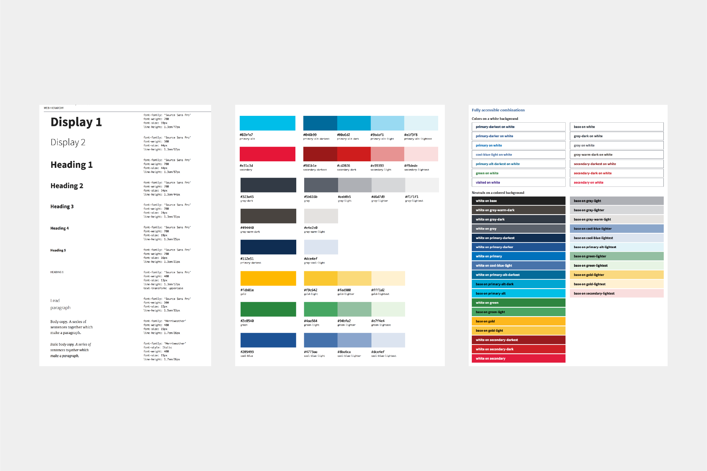
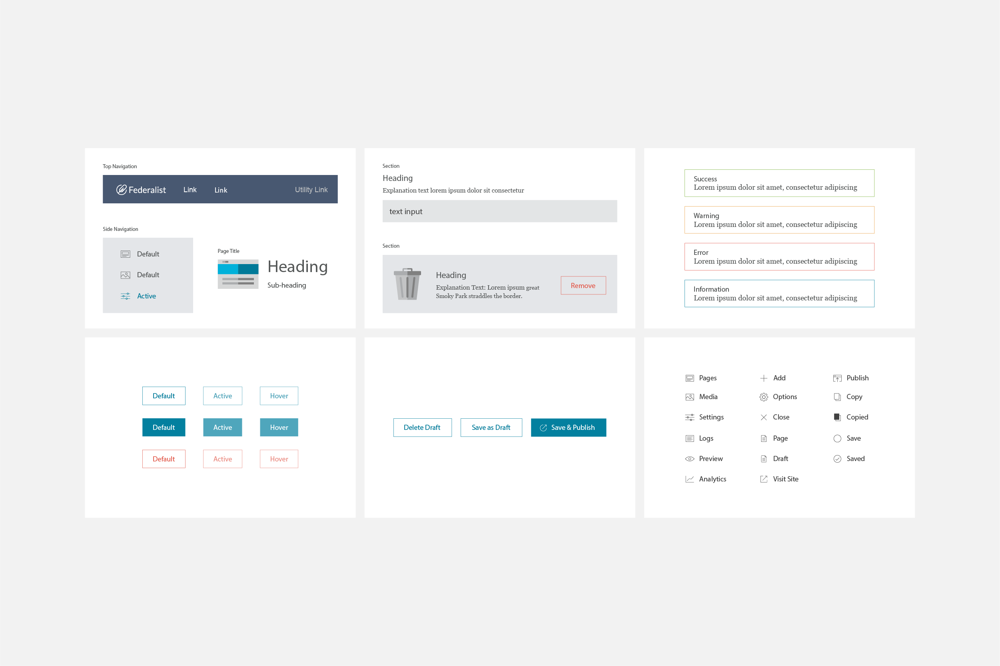

Creating design system for the people
cloud.gov
User Experience Design
Design System
Data Visualization
User Research
Accessibility
Visual Design
Iconography
As a part of widespread federal efforts to improve the public’s experience of government digital services, we needed a secure and compliant platform that helps federal agencies deliver services the public deserves in a faster and user-centered way.
When I first joined 18F, the team had just released the first beta version of the design system, and they were eager to expand the system to cover more use cases; not only expanding the UI components to include things like data visualizations and mobile native apps, but also building and launching products directly on the platform. In a nutshell, cloud.gov is GitHub Pages for government in beast mode. Powered by USWDS, it comes built-in with the ability to customize design features that meet federal security standards from the start.
To get up to speed, I began by completing a quick literature study of previous research and documentation to better understand how the design system was created and its use. I then interviewed the project leads and product owners, as well as UX researchers, early adopters, and prospect users, to identify the diverse user needs. This allowed me to compare themes and patterns of user behaviors across sources and quickly compare the value of new ideas against the current design system.
To gain a better understanding of how people use the design system in practice, I studied how users jumpstart a project from scratch using the design system to identify the critical issues in the product development workflow. Collaborating with the core design system team along the way also allowed me to contribute back and improve the design system itself by improving the usability of the design system documentation website by simplifying the information architecture, streamlining the navigation, and expanding on the UI components to cover the needs of newer products under development.
Through all the research, I learned that while the design system is excellent in supporting design and development problem solving and providing consistency to teams and users, a design system doesn’t answer all design decisions. In reality, teams make their first design decisions long before they consider the design patterns. And the problem with design systems is that having a library of design components can sometimes give the impression that all the design work has been completed. Although patterns do help teams hesitate less and build things in shorter amounts of time, it is the how and the why a group of patterns and components are stitched together that result in outstanding design.
For users to build suitable user interfaces on top of the design system, it’s essential to decide on the structure with clear hierarchy and a logical reading order. Furthermore, all government websites and applications shouldn’t look exactly the same because trust and recognition are not universal. The design must rather reflect the tone and subject matter of each agency’s distinct objectives.
By breaking down the prebuilt pages into smaller widget-like blocks to fill the void between templates and components, people can choose the most appropriate design blocks based on their content that when pieced together, build a compelling story with relatively minimal design effort. This reduced the number of tiny design decisions like relative proportion of headline and body text and amount of whitespace they had to make everywhere previously with the smaller components while providing greater flexibility to customize the aesthetic of their products. And with the ability to preview test sites live in minutes, agencies can focus their efforts on more important areas like interactions and the content itself.
I then started an experiment by designing considerably more robust designs as a starting point for the templates with the existing UI components, stretching the limit as far out as possible. Inspired by website builders like Webflow, Squarespace, Behance, and other CMSs, I mocked up several cool looking templates, then worked backwards to construct the web builder and controls to get to those desired outputs.
Putting it to use, I realized we needed to do more to build trust among stakeholders, especially when they all are very opinionated designers and developers. Most partner agencies initially used the design systems for their websites off the shelf so there was some resistance moving to cloud.gov where they feared that they had to redo all the work. We addressed this in part by building real live sites using the new templates to demonstrate the potential and made an interactive guide to show how little work involved to build and customize with the new web publisher. We tested it first with 18F's own blog posts because of the high visibility and usage, then gradually moved on to updating the whole website and internal tools, before eventually migrating many other public facing products.
After a year of the beta run, we had a running list of hundreds of teams using cloud.gov creating websites and applications with rich content and intricate data visualizations. In the last quarter alone, over 100 million people were exposed to those services created every day by notable partner agencies including Treasury, Interior, Education, White House, Defense, NASA, and Homeland Security.
We continued to see more and more agencies begin relying on cloud.gov building great accessible products and services in record time. We also saw more agencies follow how we expanded on the U.S. Web Design System creating their own iterations to meet their organization and product needs.

Design and Development
Dave Cole
Marco Segreto
JJ Moi
Ryan Thurwell
Eric Ronne
Gail Swanson
Michael Torres
Sarah Allen
Carolyn Dew
Meghana Khandekar
Will Slack
Jeremia Kimelman
Greg Boone
Aidan Feldman
Shawn Allen
Noah Kunin
Brad Nunnally